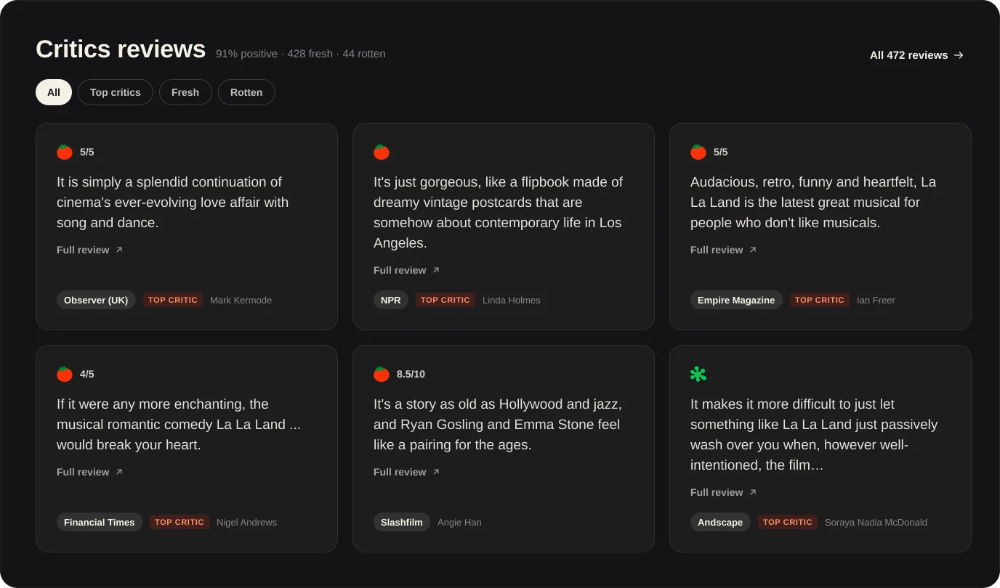
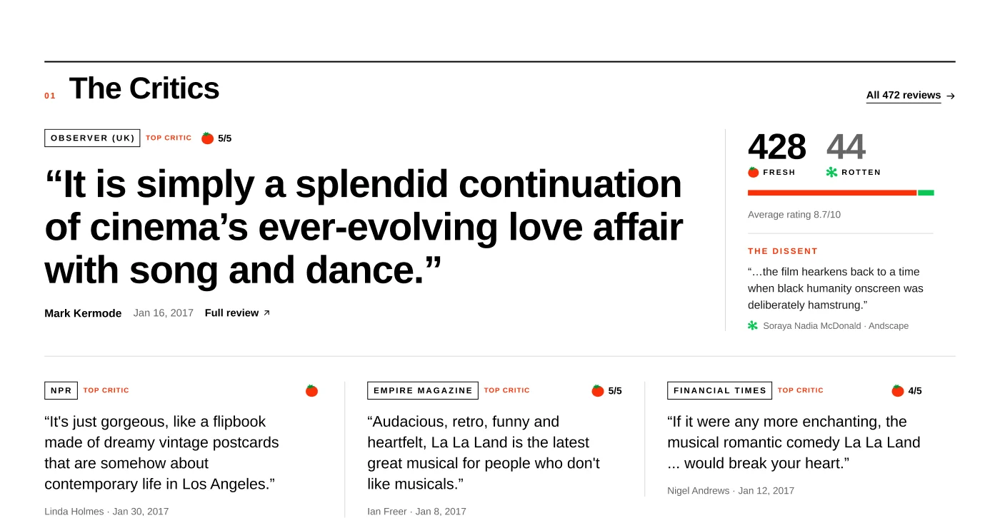
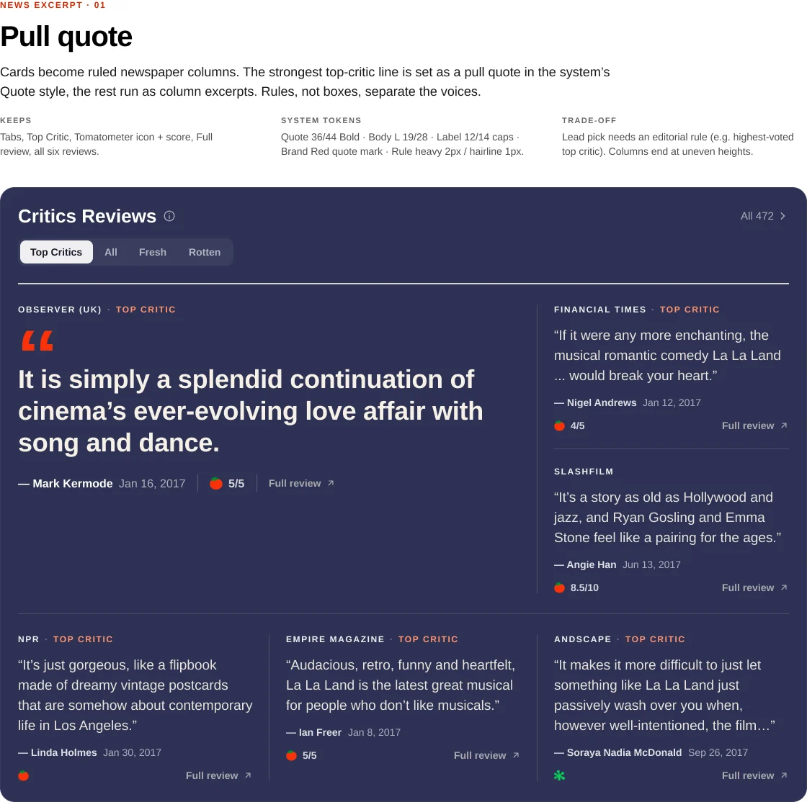
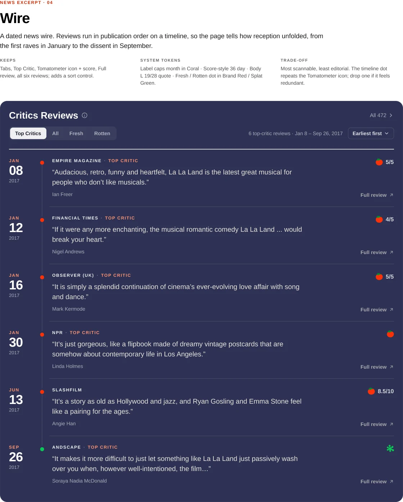

472 reviews
91%
Tomatometer
Critics’ positive review percentage. Fresh at 60% and above.
Did critics approve?
Reimagining Rotten Tomatoes around the moment that matters: deciding what to watch.
One continuous shot. Scroll to move the camera.
Rotten Tomatoes has everything a moviegoer needs to know about a film. Yet finding what actually helps them make a decision can feel surprisingly difficult.
How might we make Rotten Tomatoes better at helping people decide what to watch?
01 · The Disconnect
The redesign began with a question rather than an assumption. Two sources shaped the answer: what people say about the site, and what the page does when you use it.
A. What users are saying
Users question whether a single Tomatometer percentage adequately communicates movie quality.
Reads the score as how many people a film pleases, not how good it is.
curun1r, Hacker News · Oct 16, 2015Finds the Average Rating more useful, and says the site doesn’t make it obvious.
mrob, Hacker News · Sep 7, 2017Differences between professional critics and audience opinions are meaningful, but users need context to understand them.
Finds the two scores most valuable when they diverge.
mrbombastic, Hacker News · Dec 23, 2024Points out that the two percentages are calculated differently, so they aren’t directly comparable.
aleksiy123, Hacker News · Sep 7, 2023Some users feel that Rotten Tomatoes scores have become overly prominent in movie marketing.
Discusses a New York Times report on studios objecting to a Rotten score beside the ticket button.
CM30, Hacker News · Sep 7, 2017Describes the premise of the site as a simple number read in a second.
mcpackieh, Hacker News · Sep 7, 2023Users also rely on Rotten Tomatoes to find movies and understand where to watch them.
Wants scores visible while browsing Netflix, and keeps a second device nearby to look them up.
rixrax, Hacker News · Dec 25, 2018Uses Reelgood because it puts scores, a trailer and a deep link to the film in one place.
ryanianian, Hacker News · Jul 19, 2019“…so much time ‘deciding’ what to watch, that it gets too late to watch.”gedrap, Hacker News · Nov 2, 2013
For more than a decade, people have shipped their own tools that join a score to a place to watch.
Public comments from Hacker News, 2013 to 2024, paraphrased and linked. A small, self-selecting sample, read for themes rather than proof.
B. My heuristic evaluation
Important movie information competes with secondary content.
The two scores start around 720px. When a 970×250 ad is served, they fall entirely below the fold.
Observed on the live page, desktop Chrome at 1440×900, signed out, November 2, 2026. Positions measured on my 1:1 Figma recreation.
Advertisements, recommendations, videos, and movie information compete for attention.
Six ad placements, three separate video modules, and a floating pill that can’t be closed.
Users need to navigate different sections to find ratings, synopsis, reviews, and viewing options.
Ratings at 706px, reviews at 1,649px, the full synopsis at 4,376px.
The problem wasn’t a lack of information. It was how that information competed for attention.
02 · The Product Reality
A movie page is also a business surface. Three constraints set the boundaries of the redesign.
Rotten Tomatoes is owned by Fandango, and its experience supports several commercial activities at once. The redesign has to accommodate advertising and partnerships rather than assume they can simply disappear.
Display ads and sponsored placements.
Streaming availability, rentals, purchases, and ticketing.
Rotten Tomatoes is often used before watching a movie. So the page should prioritize evaluating a movie and finding a way to watch it.
The two scores answer different questions, so neither can stand in for the other. Both need to stay prominent.
Critics’ positive review percentage. Fresh at 60% and above.
Did critics approve?
Audience rating percentage. A rating of 3.5 stars or higher counts as positive.
Did audiences enjoy it?
The redesign needed to preserve the dual-perspective rating experience while making it easier to understand and act on.
03 · Information Architecture
Every element on the page was ranked by how directly it helps someone decide. The layout moves from content-heavy to decision-oriented.
| Element | Tier | Original (px) | Redesign (px) |
|---|---|---|---|
| Ratings | P0 | 706 | 228 |
| Rent or stream action | P1 | 890 | 824 |
| Where to Watch | P1 | 1,026 | 964 |
| Full synopsis | P0 | 4,376 | 1,097 |
| Critics Reviews | P1 | 1,649 | 1,320 |
| Audience Reviews | P1 | 2,037 | 2,184 |
| Cast & Crew | P3 | 2,615 | 3,173 |
| Videos | P3 | 2,875 | 3,490 |
| More Like This | P3 | 3,185 | 3,890 |
Top of each module in px, measured on the 1440-wide Figma frames of the original and the redesign.
04 · Key Design Decisions
Decision 01
Exploring autoplay: whether muted playback helps or distracts is untested.
Ratings should do more than summarize reception. They should help users understand why a movie is worth considering.
Decision 02
Early explorations




Newspaper-inspired editorial typography
A streamlined, information-dense review feed
Different sources deserve different reading experiences.
Decision 03
Star distribution and helpful counts are illustrative placeholders.
Expanded Critics Reviews
Expanded Audience Reviews
Make ratings more transparent, not just more prominent.
Decision 04
Prices shown are placeholders.
Once users decide a movie is worth watching, finding where to watch it should be effortless.
05 · The Redesigned Experience
The complete redesigned movie detail page, then a closer look at each part.
Interactions
Screen recordings of the working HTML prototype. Working HTML prototype built from an earlier iteration, so its hero differs from the final Figma frame. Open the prototype
Interface copy is real Rotten Tomatoes content captured in November 2026. Streaming prices, audience star values, helpful counts and ad creatives are placeholders.
06 · Reflection
The redesign brings Rotten Tomatoes closer to its most important job: helping people make more informed movie decisions.
By prioritizing ratings, giving critics and audience reviews distinct reading experiences, and making the path to watching more direct, the experience becomes more focused while respecting the commercial realities of the platform.
Cynthia Lu. Product design take-home for Prelim, November 2026.
Independent concept. Not affiliated with Rotten Tomatoes, Fandango or the film’s rights holders. Rotten Tomatoes marks, La La Land imagery and quoted reviews belong to their owners.